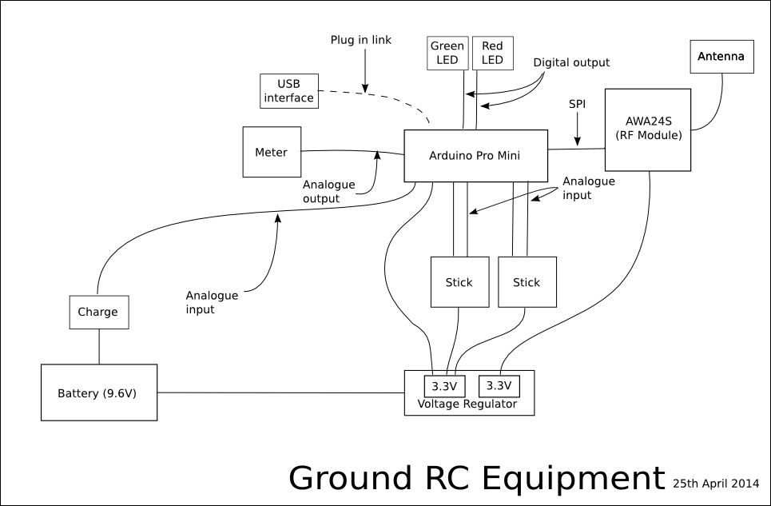
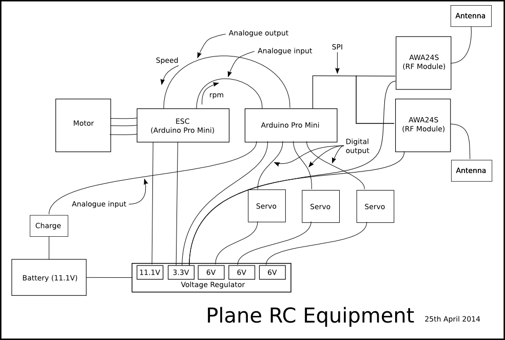
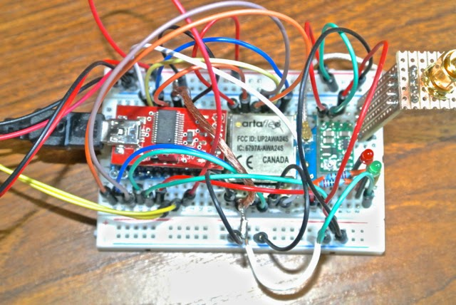
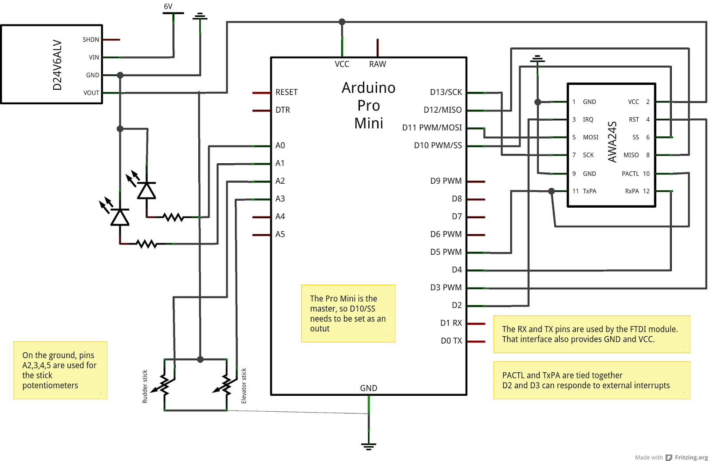
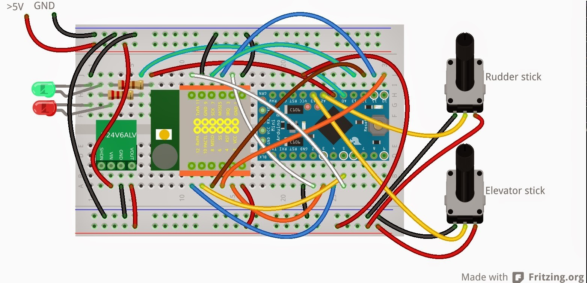
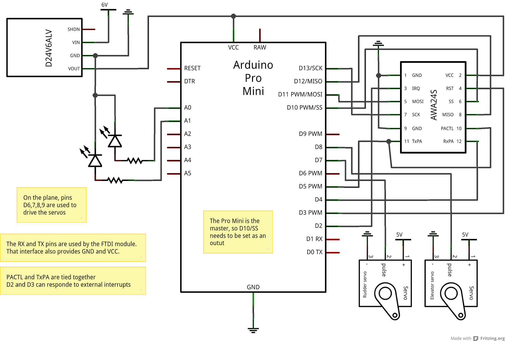
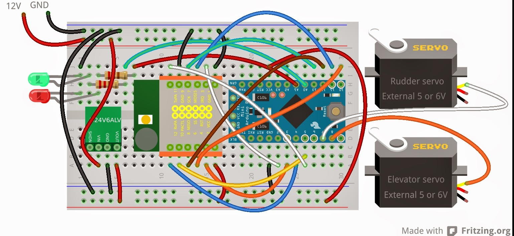

Radio Controlled Aircraft
I have just discovered that it was almost exactly a year ago that I drew system block diagrams of the hardware for my ground station and plane RC equipment. I am avoiding using the terms 'transmitter' and 'receiver' since I want to transmit information in both directions; control commands from the ground to the plane and status information such as signal strength and battery charge from the plane to the ground. Both ends of the link would consist of basically three modules; a micro controller, a radio frequency module and a power supply. I would also need a USB interface that I could use for programming the module and for monitoring and testing.
Micro Controller
On the Radio Control Equipment page I explained that I would use something from the Arduino range. Although I initially bought a Uno with which to experiment, I needed something smaller and lighter for the plane and it seemed sensible to use the same module at both ends. As you will see below, the RF module required 3.3V and so I chose the 3.3V version of the Arduino Pro Mini, which is actually made by Sparkfun. This version only runs at 8MHz (as opposed to 16MHz for the 5V version), but it avoids using signal converters to interface to the RF module. The Pro Mini is also relatively small (0.7"x1.3"), supports the Serial Peripheral Interface (SPI) and just about has enough input/output channels for my needs.
Radio Frequency Module
There is a limited choice of certified RF modules that can provide the range required. One option is the XBee Pro. However, I rejected this on the basis of its price and a view I read somewhere about the communications protocol being too rigid. I could not find a UK supplier of the Unigen UGWJ4US as used by Dunc, so I chose to use the artaflex AWA24S module, which I ordered from Digi-Key in the UK. Although there is little more than a data sheet for the module, it uses the Cypress CYRF7936 chip, but with power amplifiers for transmitted and received signals. One problem with the module is that its 12 pins are on a 2mm pitch, whereas most other PCB-related connectors are on a 0.1" pitch. So I found a 2x6 header with a 2mm pitch and 'bent' the pins so that I could solder it to a piece of strip board. Details of using this module can be found on the RF Module page.
Voltage Regulator
I decided to use a dedicated, switch-mode voltage regulator to supply the 3.3 volts needed by the Pro Mini and the AWA24S. I will then need another voltage regulator to provide 5 or 6V to the servos in the plane. I chose to use a small (0.4"x0.6") step down voltage regulator from Pololu (D24V6ALV) that can provide up to 600mA, which should be more than enough for the Arduino Pro Mini and the AWA24S RF module. The green voltage regulator board is on the right and the RF module in the middle on this photo of the ground station breadboard.
USB Interface
In addition to the modules that would be permanent parts of the two units, I also needed some means of uploading a sketch (the name given to the Arduino code) to the Pro Mini since it does not have an interface connector (unlike the UNO which has a USB interface on the board). However, the Pro Mini does have transmit and receive pins, along with VCC and GND, to which a header can be soldered. A USB to serial converter board (FTDI) can then plug into the header. The board can power the Pro Mini and AWA24S from the USB port since it has a jumper to select either 5V or 3.3V. The red FTDI board can be seen on the left (plugged into the Pro Mini, which is beneath it) of the breadboard.
Ground Station Unit Design
To produce schematic diagrams and lay out a breadboard test I used the Fritzing application. All my development is done on a Linux system, although the open-source free software Fritzing is also available on Windows and Mac. The diagrams shown here are image exports from Fritzing. I had to construct my own template for the AWA24S module and, at the time, did not think to include the antenna connection. So the schematic does not show the antenna. On the breadboard image it is the yellow circle on the white rectangular background and is a u.fl connector. I had to buy a u.fl to SMA connector and a reverse polarity SMA connector for the antenna, but more about that on the antennae page.
The schematic and breadboard diagrams are as my design is currently implemented. I still need to add some form of indication for the ground station and plane battery status and for the plane's measurement of the received signal strength.
The output from the voltage regulator is 3.3V, but the input will be from something like an 800mAh, 9.6V NiCad battery. The voltage regulator will take up to 42V.
I bought a second-hand RC transmitter (of dubious quality) and removed the control sticks from it for use during my experimentation. I had thought that I might use the case to house my completed ground station unit, but my current thoughts are to use some form of plastic box (perhaps lined to give some RF shielding) so that I can mount other indicators, both visual and audio.
Plane Unit Design
I also bought two second-hand servos with which to experiment. Although I will need three servos and an ESC (electronic speed controller), my breadboard experiment only drives two servos. On the plane I still need to design and implement:
- A second AWA24S so as to provide diversity of antenna (different directions to allow for the polarised signal);
- Battery monitoring input to the Arduino.
To implement dual RF modules I need to find another digital output for the SPI interface and so need to experiment with using a spare analogue channel. However, I might experiment with antennae that transmit/receive a circularly polarised signal. When I get around to trying this I will collect some notes on the Antennae page.
Again, the power will need to be provided by a battery. If the units are used in an IC powered plane then I could use something like a 6V, 2,000 mAh Ni-MH as I currently use in my trainer. However, if used in an electric powered plane I can use the main battery that powers the motor.
Development
In practice I started with just an Arduino Uno and a single RF module and checked that I could make the SPI communications work. That in itself had several steps, but I progressed, step by step, until I had the units shown above communicating. These steps are described in more detail on the Software Design page.